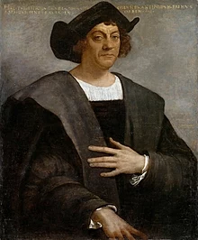

La historia de Colombia hace referencia a los procesos que han marcado el devenir histórico de la actual República de Colombia, un país americano ubicado al noroccidente de América del Sur, con una superficie de 300 408 km² (1 141 748 km² corresponden a su territorio continental y los restantes 928 660 km² a su extensión marítima) y una población de 50 372 424
El siglo xix en Colombia fue una época de grandes cambios: se pasó de ser una dependencia del Imperio español en sus inicios, a las guerras de independencia y a los experimentos políticos para dar forma a una nación independiente. Tras el levantamiento del Común en 1781 y de varios episodios que tuvieron como eje la Expedición Botánica iniciada en 1783 y, la publicación de la Declaración de los derechos del hombre y del ciudadano hecha por Antonio Nariño en 1793, el movimiento independentista se manifestó concretamente el 15 de julio de 1810, cuando los habitantes de Santafé depusieron al virrey y liquidaron la Real Audiencia, símbolos del poder español.La década subsecuente se dividió en cuatro etapas: la Patria Boba, la Campaña de Nariño en el sur, la Reconquista y la Guerra de Independencia en que el Ejército Libertador consiguió en el Pantano de Vargas un triunfo decisivo en julio de 1819, y el 7 de agosto siguiente derrotó al Ejército Realista sellando la independencia del país
Antonio Nariño divulgó Los derechos del Hombre y del Ciudadano en 1793. A comienzos del siglo xix la metrópolis española fue invadida por Napoleón, quien tras capturar al monarca Fernando VII, otorgó a José Bonaparte los títulos de rey de España y emperador de las Américas. La situación fue aprovechada por las colonias de América para organizar revueltas como la ocurrida en Bogotá en 1810 en torno al emblemático Florero de Llorente
En 1819 un ejército republicano comandado por Simón Bolívar cruzó las montañas que separan Casanare de Tunja y Santa Fe, Tras la Batalla del Pantano de Vargas y la Batalla de Boyacá tuvo vía libre para tomar el control definitivo de Santa Fe ciudad a la que llegó el 10 de agosto de 1819. Ese mismo mes, el 19, se proclamó la República de Colombia la cual ya había sido firmada en el Congreso de Angostura del 15 de febrero del mismo año, que condujeron a que el territorio ocupado por el virreinato de Nueva Granada, se convirtiera en una República Federal, conocida como la Gran Colombia en honor al navegante Cristóbal Colón
